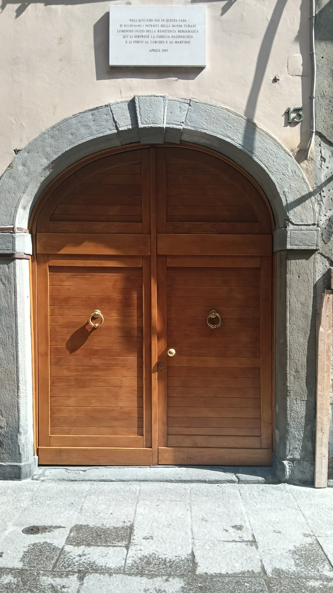
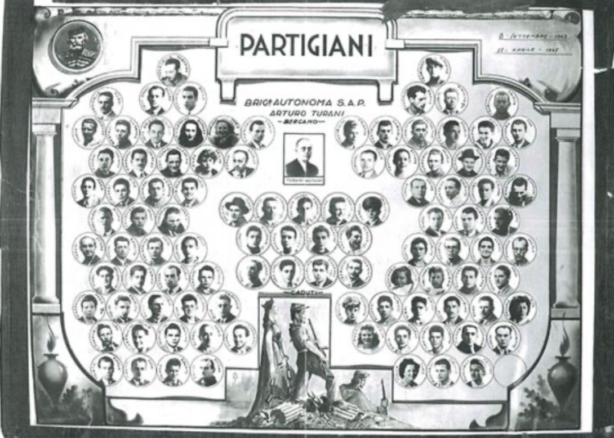
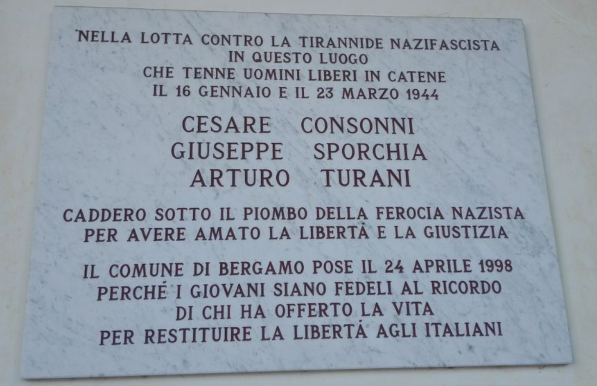

Contesto storico
Ci troviamo in Via Pignolo 13 non era un semplice indirizzo, ma uno dei centri operativi della Resistenza a Bergamo. In questi palazzi, tra cortili nascosti e scantinati, si incrociavano le vite di chi aveva deciso di ribellarsi al regime, come i membri della Banda Turani. Dopo l'8 settembre 1943, la città divenne un labirinto di spie e delatori: bastava una parola sussurrata alla persona sbagliata per finire nelle mani della Polizia Federale fascista, che aveva i suoi uffici a pochi passi da qui.
🎧 Audio Lettura
Perché è un luogo della memoria
Il luogo testimonia la presenza a bergamo di formazioni resistenziali. In particolare la Banda Turani prende il nome da Arturo Turani, figura centrale della prima formazione resistenziale organizzata in città, inizialmente nota come brigata Matteotti. Composta prevalentemente da giovani, operava nel cuore di via Pignolo e svolgeva un ruolo fondamentale nella lotta clandestina: il recupero di armi e munizioni, decisive anche per altre formazioni partigiane, la diffusione della stampa antifascista, il collegamento con i gruppi attivi in montagna e in pianura, nonché il sostegno ai prigionieri evasi e ai perseguitati, attraverso documenti falsi e reti di espatrio verso la Svizzera. Tuttavia, l’azione della banda fu segnata anche da una certa ingenuità organizzativa, tipica delle primissime formazioni resistenziali nate spontaneamente dopo l’8 settembre. La scelta di tenere riunioni in pieno centro a Bergamo, in una zona strettamente controllata dalle autorità fasciste, si rivelò estremamente rischiosa. In un contesto saturo di delazioni e infiltrazioni, questo spontaneismo, animato da entusiasmo e coraggio ma povero di esperienza clandestina, rese il gruppo particolarmente vulnerabile. La sua azione fu intensa ma di breve durata. Già tra la fine del 1943 e l’inizio del 1944 la banda venne duramente colpita a causa di infiltrazioni e tradimenti. Gli arresti portarono allo smantellamento del gruppo e alla fucilazione di Arturo Turani, Giuseppe Sporchia e Cesare Consonni, mentre altri membri furono incarcerati o riuscirono a fuggire. La sorte della Banda Turani non fu isolata: molte delle prime formazioni partigiane cittadine, nate sull’onda dell’indignazione e della volontà immediata di reagire, subirono colpi analoghi. Anche la formazione Betty Ambiveri fu travolta dalla repressione nei suoi primi mesi di attività. In questa fase iniziale, l’antifascismo armato si caratterizzò per uno spontaneismo generoso ma fragile, privo di strutture consolidate e di adeguate misure di sicurezza, fattori che ne determinarono la debolezza di fronte a un apparato repressivo già esperto e organizzato. Nonostante la repressione, il sacrificio dei suoi protagonisti consentì di salvaguardare altre cellule della Resistenza cittadina, che riuscirono a sopravvivere e a proseguire la lotta fino alla Liberazione.
Pur non facendo parte direttamente della Banda Turani, Arturo Turani ebbe un ruolo fondamentale nella Resistenza bergamasca. Nato a Bergamo il 29 settembre 1888, architetto di professione, dopo l’8 settembre 1943 aderì attivamente alla Guerra di Liberazione, impegnandosi nell’organizzazione di un primo nucleo partigiano della Brigata “Matteotti”, formazione che, dopo la sua morte, sarebbe stata ribattezzata Brigata “Arturo Turani” in suo onore. Il 15 novembre 1943 fu arrestato nella propria abitazione di via Pignolo, durante una riunione clandestina. Consegnato alle autorità tedesche, venne processato da un tribunale militare germanico con l’accusa di attività partigiana e di occultamento di armi, e condannato a morte. La fucilazione avvenne il 23 marzo 1944 presso la caserma “Seriate” di Bergamo. Il corpo fu successivamente sepolto in modo sommario in un podere di Grumello del Piano; nell’agosto dello stesso anno la salma fu casualmente rinvenuta accanto a quella del compagno di lotta Giuseppe Sporchia e provvisoriamente inumata nel cimitero di Grumello. Il sacrificio di Arturo Turani si ricollega idealmente alla Banda Turani e ad altri gruppi partigiani attivi in città: entrambi contribuirono, ciascuno nel proprio ambito, a organizzare la Resistenza e a proteggere le cellule partigiane fino alla Liberazione. Nel sessantesimo anniversario della Liberazione, la città di Bergamo ha voluto onorarne la memoria con una lapide nel luogo in cui fu catturato, a testimonianza del suo impegno per la libertà.
🎧 Audio Lettura
Contenuti multimediali



Fonti
Fonti bibliografiche
- Itinerari di memoria, Mario Pelliccioli
- Angelo Bendotti, Breve la vita della banda Turani, in Banditen. Uomini e donne nella Resistenza bergamasca, Il filo di Arianna, Bergamo 2015, pp. 137-154.
- ISREC Bergamo (Istituto bergamasco per la storia della Resistenza e dell'età contemporanea)
- Saggistica e Testimonianze: Raccolte curate da storici locali
- Rapporti del CLN (Comitato di Liberazione Nazionale)
- Biografia di Arturo Turani
- Eco di Bergamo
- Bergamo news
- Corriere della sera
- Repubblica
- ANPI